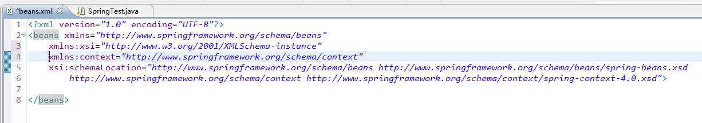
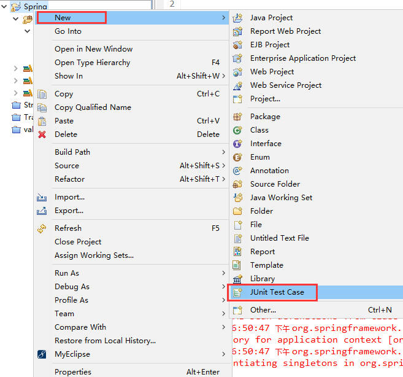
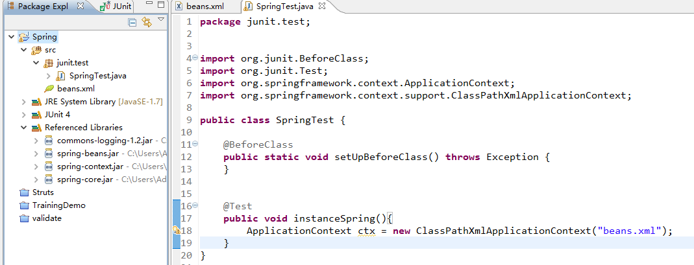
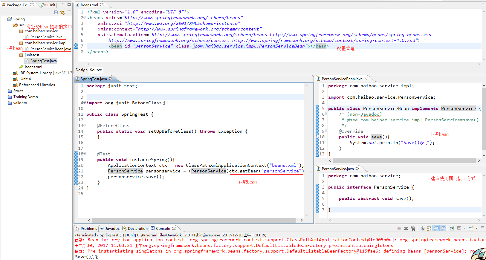
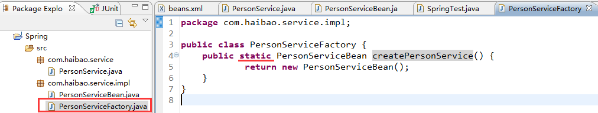

Spring2.5学习笔记
 CoMath
CoMath
1、什么是Spring
Spring是一个开源的控制反转(Inversion of Control,IoC)和面向切面(AOP)的容器框架，它的主要目的是简化企业开发. 用于配置bean,并维护bean之间关系的框架.
在SSH框架中spring充当了管理容器的角色. 我们都知道Hibernate用来做持久层，因为它将JDBC做了一个良好的封装，程序员在与数据库进行交互时可以不用书写大量的SQL语句. Struts是用来做应用层的，他它负责调用业务逻辑serivce层. 所以SSH框架的流程大致是：Jsp页面—-Struts——Service（业务逻辑处理类）—Hibernate（左到右）. Struts负责控制Service（业务逻辑处理类），从而控制了Service的生命周期，这样层与层之间的依赖很强，属于耦合. 这时，使用spring框架就起到了控制Action对象（Strus中的）和Service类的作用，两者之间的关系就松散了，Spring的Ioc机制（控制反转和依赖注入）正是用在此处.
Spring的Ioc（控制反转和依赖注入）
控制反转：就是由容器控制程序之间的（依赖）关系，而非传统实现中，由程序代码直接操控. 应用本身不负责以来对象的而创建和维护，以来对象的创建和维护是由外部容器负责的. 这样控制权就有应用转到了外部容器，控制权的转移就是所谓反转.
依赖注入：组件之间的依赖关系由容器在运行期决定 ，由容器动态的将某种依赖关系注入到组件之中 .
2、为什么要使用Spring（Spring的好处）
- 降低组建之间的耦合度，实现软件隔层之间的解耦；
- 可以使用容器提供的众多服务，如：事务管理服务、消息服务等等. 当我们使用容器管理服务时，开发人员就不在需要手工控制事务，也不需要处理复杂的事务传播；
- 容器提供单例模式支持，开发人员不需要自己编写实现代码；
- 容器提供AOP技术，利用这些类能够够加快应用的开发，如：JdbcTemplate、HibernateTemplate；
- Spring对于主流的应用框架提供了集成支持，如：集成Hibernate、JPA、Struts等，这样更便于应用开发.
轻量级与重量级概念的区分
主要看它使用了多少服务，使用服务越多，容器为java对象做的工作就越多，必然会影响到应用的发布时间或者运行性能.
对于Spring容器，它提供了很多服务，但这些服务并不是默认应用打开的，应用需要某种服务，还需要知名使用该服务，如果应用使用的服务很少，如：只是用了Spring的核心服务，那么我们可以认为此时应用属于轻量级的，如果使用了Spring提供的大部分服务，这时应用属于重量级的，目前EJB容器就因为它默认为应用提供了EJB规范中的所有功能，所以它属于重量级的.
3、配置spring所需要的jar包
spring.jar是包含有完整发布的单个jar 包，spring.jar中包含除了spring-mock.jar里所包含的内容外其它所有jar包的内容，因为只有在开发环境下才会用到 spring-mock.jar来进行辅助测试，正式应用系统中是用不得这些类的.
除了spring.jar文件，Spring还包括有其它13个独立的jar包，各自包含着对应的Spring组件，用户可以根据自己的需要来选择组合自己的jar包，而不必引入整个spring.jar的所有类文件.
- spring-core.jar：这个jar文件包含Spring框架基本的核心工具类，Spring其它组件要都要使用到这个包里的类，是其它组件的基本核心，当然你也可以在自己的应用系统中使用这些工具类.
- spring-beans.jar：这个jar文件是所有应用都要用到的，它包含访问配置文件、创建和管理bean以及进行Inversion of Control / Dependency Injection（IoC/DI）操作相关的所有类. 如果应用只需基本的IoC/DI支持，引入spring-core.jar及spring-beans.jar文件就可以了.
- spring-aop.jar：这个jar文件包含在应用中使用Spring的AOP特性时所需的类. 使用基于AOP的Spring特性，如声明型事务管理（Declarative Transaction Management），也要在应用里包含这个jar包.
- spring-context.jar：这个jar文件为Spring核心提供了大量扩展. 可以找到使用Spring ApplicationContext特性时所需的全部类，JDNI所需的全部类，UI方面的用来与模板（Templating）引擎如Velocity、FreeMarker、JasperReports集成的类，以及校验Validation方面的相关类.
- spring-dao.jar：这个jar文件包含Spring DAO、Spring Transaction进行数据访问的所有类. 为了使用声明型事务支持，还需在自己的应用里包含spring-aop.jar.
- spring-hibernate.jar：这个jar文件包含Spring对Hibernate 2及Hibernate 3进行封装的所有类.
- spring-jdbc.jar：这个jar文件包含对Spring对JDBC数据访问进行封装的所有类.
- spring-orm.jar：这个jar文件包含Spring对DAO特性集进行了扩展，使其支持 iBATIS、JDO、OJB、TopLink，因为Hibernate已经独立成包了，现在不包含在这个包里了. 这个jar文件里大部分的类都要依赖spring-dao.jar里的类，用这个包时你需要同时包含spring-dao.jar包.
- spring-remoting.jar：这个jar文件包含支持EJB、JMS、远程调用Remoting（RMI、Hessian、Burlap、Http Invoker、JAX-RPC）方面的类.
- spring-support.jar：这个jar文件包含支持缓存Cache（ehcache）、JCA、JMX、邮件服务（Java Mail、COS Mail）、任务计划Scheduling（Timer、Quartz）方面的类.
- spring-web.jar：这个jar文件包含Web应用开发时，用到Spring框架时所需的核心类，包括自动载入WebApplicationContext特性的类、Struts与JSF集成类、文件上传的支持类、Filter类和大量工具辅助类.
- spring-webmvc.jar：这个jar文件包含Spring MVC框架相关的所有类. 包含国际化、标签、Theme、视图展现的FreeMarker、JasperReports、Tiles、Velocity、XSLT相关类. 当然，如果你的应用使用了独立的MVC框架，则无需这个JAR文件里的任何类.
- spring-mock.jar：这个jar文件包含Spring一整套mock类来辅助应用的测试. Spring测试套件使用了其中大量mock类，这样测试就更加简单. 模拟HttpServletRequest和HttpServletResponse类在Web应用单元测试是很方便的.
如何选择这些发布包，决定选用哪些发布包其实相当简单.
如果你正在构建Web应用并将全程使用Spring，那么最好就使用单个全部的spring.jar文件； 如果你的应用仅仅用到简单的Inversion of Control / Dependency Injection（IoC/DI）容器，那么只需spring-core.jar与spring-beans.jar即可；
如果你对发布的大小要求很高，那么就得精挑细选了，只取包含自己所需特性的jar文件了. 采用独立的发布包你可以避免包含自己的应用不需要的全部类. 当然你可以采用其它的一些工具来设法令整个应用包变小，节省空间的重点在于准确地找出自己所需的Spring依赖类，然后合并所需的类与包就可以了.
Eclispe有个插件叫ClassPath Helper可以帮你找找所依赖的类.
4、Spring包依赖说明:
- spring-core.jar需commons-collections.jar，spring-core.jar是以下其它各个的基本.
- spring-beans.jar需spring-core.jar，cglib-nodep-2.1_3.jar
- spring-aop.jar需spring-core.jar，spring-beans.jar，cglib-nodep-2.1_3.jar，aopalliance.jar
- spring-context.jar需spring-core.jar，spring-beans.jar，spring-aop.jar，commons-collections.jar，aopalliance.jar
- spring-dao.jar需spring-core.jar，spring-beans.jar，spring-aop.jar，spring-context.jar
- spring-jdbc.jar需spring-core.jar，spring-beans.jar，spring-dao.jar
- spring-web.jar需spring-core.jar，spring-beans.jar，spring-context.jar
- spring-webmvc.jar需spring-core.jar/spring-beans.jar/spring-context.jar/spring-web.jar
- spring-hibernate.jar需spring-core.jar，spring- beans.jar，spring-aop.jar，spring-dao.jar，spring-jdbc.jar，spring- orm.jar，spring-web.jar，spring-webmvc.jar
- spring-orm.jar需spring-core.jar，spring-beans.jar，spring-aop.jar，spring-dao.jar，spring-jdbc.jar，spring-web.jar，spring-webmvc.jar
- spring-remoting.jar需spring-core.jar，spring-beans.jar，spring- aop.jar，spring-dao.jar，spring-context.jar，spring-web.jar，spring- webmvc.jar
- spring-support.jar需spring-core.jar，spring-beans.jar，spring-aop.jar，spring-dao.jar，spring-context.jar，spring-jdbc.jar
- spring-mock.jar需spring-core.jar，spring-beans.jar，spring-dao.jar，spring-context.jar，spring-jdbc.jar
一、只是使用spring框架
-
dist\spring.jar
-
lib\jakarta-commons\commons-logging.jar
-
如果使用到了切面编程(AOP)，还需要下列jar文件
-
lib\aspectj\aspectjweaver.jsr 和 aspectjrt.jar
-
lib\cglib\cglib-nodep-2.1_3.jar
-
-
如果使用了JSR-250中的注解如
@Resource/@PostConstruct/@PreDestroy,还需下列jar文件- lib\j2ee\common-annotations.jar
二、只是使用spring框架若使用注解方式
只要加一些命名空间和开启解析器,并且@Resource需要加lib\j2ee\common-annotations.jar
<context:annotation-config/>打开处理器
三、要自动扫描
只要开启解析器和一些命名空间
<context:component-scan base-package=""/>
四、spring框架采用aop编程
需要导入一些命名空间
xmlns:aop…….
<aop:aspectj-autoproxy/>开启解析器
如果使用到了切面编程(AOP)，还需要下列jar文件
- lib\aspectj\aspectjweaver.jsr 和 aspectjrt.jar
- lib\cglib\cglib-nodep-2.1_3.jar
五、spring+Jdbc开发
需要数据源文件 lib\jakarta-commons\commons-pool.jar、lib\jakarta-commons\commons-dbcp.jar
- spring文件 ： dist\spring.jar、 lib\jakarta-commons\commons-logging.jar
- jdbc驱动文件 mysql**** sql*** ： 导入tx命名空间 <tx:annotation-driven transaction-manager=""/> 对事务注解的解析器
六、spring2.5+hibernate3.3+struts1.3
- hibernate核心包
- hibernate3.jar
- lib\required*.jar
- lib\optional\ehcache-1.2.3.jar (二级缓存文件)
- hibernate注解包 l+ ib\test\slf4j-log4j12.jar
- spring包
- dist\spring.jar
- lib\jakarta-commons\commons-logging.jar 和commons-pool.jar、commons-dbcp.jar(后为数据源文件)
- dist\modules\spring-webmvc-struts.jar (与struts1的集成)
- lib\aspectj\aspectjweaver.jsr 和 aspectjrt.jar (Aop文件)
- lib\cglib\cglib-nodep-2.1_3.jar (Aop文件)
- lib\j2ee\common-annotations.jar (注解文件)
- lib\log4j\log4j-1.2.15.jar
- sturs1.3.8
建议将jstl-1.0.2.jar和standard-1.0.2.jar文件更换为1.1版本，此时JSTL文件．还有spring已存在antlr-2.7.6.jar文件所以将struts中的antlr-2.7.6.jar文件删除以免冲突．
七、spring2.5+hibernate3.3+struts2整合开发
struts2文件lib里面所有不带-plugin结尾的jar文件，但除了struts2-spring-plugin-2.0.11.1.jar.
5、实例化Spring容器
5.1、实例化Spring容器的方式有两种：
方法一： 在类路径下寻找配置文件来实例化容器
ApplicationContext ctx =
new ClassPathXmlApplicationContext("beans.xml");
//1.创建Spring的IOC容器对象ApplicationContext代表IOC容器
// ClassPathXmlApplicationContext:类路径下的XML格式的配置文件
ApplicationContext ctx = new ClassPathXmlApplicationContext("applicationContext.xml");
//2.从IOC容器对象中获取Bean实例
HelloWorld helloWorld2 = (HelloWorld) ctx.getBean("helloworld");
//3.调用hello方法
helloWorld2.hello();
方法二： 在文件内系统路径下寻找配置文件来实现容器：
ApplicationContext ctx =
new FileSystemXmlApplicationContext("beans.xml");
Spring配置文件可以指定多个，可以通过String数组传入. 配置Spring环境
<?xml version="1.0" encoding="UTF-8"?>
<beans xmlns="http://www.springframework.org/schema/beans"
xmlns:xsi="http://www.w3.org/2001/XMLSchema-instance"
xmlns:context="http://www.springframework.org/schema/context"
xsi:schemaLocation="http://www.springframework.org/schema/beans http://www.springframework.org/schema/beans/spring-beans.xsd
http://www.springframework.org/schema/context http://www.springframework.org/schema/context/spring-context-4.0.xsd">
</beans>
 测试是否搭建成功:项目右键新建Junit Test Case.  
6、如何将业务bean交给Spring管理
在Spring配置中添加<bean id=”名称” name=”名称” class=””></bean>，此时bean就可以由Spring容器帮助创建和维护，当我们要用到bean的时候只需要从Spring容器中获取即可，获取的时候可以用ApplicationContext.getBean(id);（返回值为 Object），可以通过bean的接口对其进行引用，之后即可调用其方法.
注意：id中不能包含特殊字符例如“/”，而name中可以包含. 如果包含特殊字符则用name=””；其他可以用id=””.
实例：首先创建一个业务bean–PersonServiceBean，建议使用面向接口编程（要实现软件之间的解耦），所以可以抽取接口，然后交给Spring管理. 
7、三种实例化bean的方式：
7.1、实用类构造器实例化
<bean id="personService"
class="com.haibao.service.impl.PersonServiceBean"/>
<!-- 配置bean
class:bean的全类名，通过反射的方式在IOC容器中创建Bean，所以Bean中必须有无参构造器
id:表示容器中的bean唯一
-->
7.2、使用静态工厂方法实例化
<bean id="personService2"
class="com.haibao.service.impl.PersonServiceFactory"
factory-method="createPersonService"/>

public class PersonServiceFactory {
public static PersonServiceBean createPersonService() {
return new PersonServiceBean();
}
}
7.3、使用实例化工厂实例化
<bean id="personServiceFactory"
class="com.haibao.service.impl.PersonServiceFactory"/>
<bean id="personService3"
factory-bean="personServiceFactory"
factory-method="createPersonService2"/>
public class PersonServiceFactory {
public PersonServiceBean createPersonService() {
return new PersonServiceBean();
}
}
8、Bean的作用域及bean的生命周期
.sigleton（单例模式，Spring容器启动的时候bean就被实例化）
在每个Spring IoC容器中一个bean定义只有一个对象实例. 默认情况下会在容器启动时初始化bean，我们可以指定Bean节点的laz-init=”true”来延迟初始化bean，这时候，只有第一次获取bean才会初始化bean.
例如：<bean id=”XXX” class=”XXX” lazy-init=“true”/> ,
（设置lazy-init=“true”后Spring容器启动的时候bean不会被实例化）.如果想所有的应用都应用延迟初始化，可以在根节点beans设置default-lazy-init=”true”;即：<bean id=”XXX” class=”XXX” default-lazy-init=“true”/>,.prototype(调用getBean()方法的时候bean才会被实例化).每次从容器获取bean都是新对象.
<bean id=”XXX” class=”XXX” scope=” prototype”/>.
初始化：初始化方法可以在bean的配置中用init-method=""方法调用初始化函数.
销毁：默认情况下只有Spring容器北校关闭才会销毁. 可以在bean的配置中用destroy-method=""方法销毁.
9、依赖注入对象：
所谓依赖注入是指：在运行期，外部容器动态的将以来对象注入到组件.
基本类型对象注入：
<bean id="orderService" class="orderServiceBean">
//构造器注入
<constructor-arg index="0" type="java.lang.String" value="XXX">
//属性setter方法注入
<property name="name" value="value"/>
</bean>
方式一：
<bean id="orderDao" class="PersonDaoBean"/>
<bean id="orderService" class="PersonServiceBean">
<property name="orderDao" ref="orderDao"></property>
</bean>
// ref：指向其他bean
方式二：(使用内部bean，但该bean不能被其他bean使用)
<bean id="orderService" class="PersonServiceBean">
<property name="orderDao" ref="orderDao">
<bean class=" orderDao"/>
</property>
</bean>
当我们把依赖对象注入交给外部容器负责创建，namePersonServiceBean类可以改成：
public class PersonServiceBean implements PersonService {
private PersonDao personDao;
public PersonDao getPerson(){
return personDao;
}
public void getPersonDao(PersonDao personDao){
this.personDao = personDao;
}
public void save(){
personDao.add();
}
}
public class PersonDaoBean implements PersonDao{
public void add(){
System.out.println("add()方法");
}
}
beans.xml配置中：
<bean id="personDaoname" class="PersonDaoBean"/>
<bean id="personService" class="PersonServiceBean">
<property name="personDao" ref="personDaoname "></property>
</bean>
- 属性setter方法注入
对基本类型进行注入：
<property name="name" value="value"/>
集合类型的装配
public calss orderServiceBean{
private Set<String> sets = new HashSet<Striing>();
private List<String> lists = new ArrayList<Striing>();
private Properties properties = new Properties ();
private Map<String,String> maps = new HashMap<String,Striing>();
// 一定要生成getter、setter方法
}
<property name="sets">
<set>
<value>值1</value>
<value>值2</value>
<value>值3</value>.
</set>
<property/>
<property name="lists">
<list>
<value>值1</value>
<value>值2</value>
<value>值3</value>
</list>
<property/>
<property name="properties">
<props>
<prop key="key1">值1</prop>
<prop key="key2">值2</prop>
<prop key="key3">值3</prop>.
</props>
<property/>
<property name="maps">
<map>
<entry key="key1" value="1"/>
<entry key="key2" value="2"/>
<entry key="key3" value="3"/>.
</map>
<property/>
- 构造器参数注入
<constructor-arg index="0" type="java.lang.String" value="XXX"/>
<constructor-arg index="1" type="java.lang.String" value="XXX"/>
- 使用Field注入（用于注解方式） 注入以来对象可以采用手工装配或自动装配，在实际应用中建议使用手工装配，因为自动装配会产生未知情况，开发人员无法预见最终结果.
9.1、依赖注入—手工装配
手工装配依赖对象，在这种方式中有两种变成方式
- 在xml配置文件中通过bean节点下配置. 如：
<bean id="orderDao" class="PersonDaoBean"/>
<bean id="orderService" class="PersonServiceBean">
<property name="orderDao" ref="orderDao"></property>
</bean>
- 在java代码中使用@Autowire或@Resource注解方式进行装配. 但我们需要在xml配置文件中配置以下信息：
<?xml version="1.0" encoding="UTF-8"?>
<beans xmlns="http://www.springframework.org/schema/beans" xmlns:xsi="http://www.w3.org/2001/XMLSchema-instance"
xmlns:context=http://www.springframework.org/schema/context xsi:schemaLocation="http://www. springframework.org/schema/beans http://www.springframework.org/schema/beans/spring-beans.xsd
http://www.springframework.org/schema/context http://www.springframework.org/schema/context/spring-context-2.5.xsd">
<context:annotation-config/>
</beans>
这个配置也是注册了多个对注释进行解析处理的处理器：
- AutwiredAnnotationBeanProcessor
- CommonAnnotationBeanPostProcessor
- PersistenceAnnotationBeanPostProcessor
- RequiredAnnotationBeanProcessor
注：@Resource注解在Spring安装目录下的lib\j2ee\common-annotation.jar 在java代码中使用@Autowire或@Resource注解方式进行装配，这两个注解的区别是：@Autowire默认按类型装配，@Resource，默认按名称装配，当找不到与名称匹配的bean才会按类型装配.
@Autowire
private PersonDao personDao;//用于字段上
@Autowire
public void setOrderDao(PersonDao personDao){
//用于属性的setter方法上
this.orderDao = orderDao；
}
@Autowire注解是按类型装配依赖对象，默认情况下他要求对象必须存在，如果允许为null值，可以设置它的required属性为false. 如果想使用按名称装配，可以结合@Qualifier注解一起使用. 如下：
@Autowire @Qualifier(“personDaoBean”)
private PersonDao personDao；
@Resource注解和@Autowire一样，也可以标注在字段或属性的setter方法上，但他默认按名称装配. 名称可以通过@Resource的name属性指定，如果没有指定name属性，当注解标注在字段上，即默认取字段的名称作为bean名称寻找依赖对象，当注解标注在属性的setter方法上，即默认取属性名作为bean名称寻找依赖对象.
@Resource(name=”personDaoBean”)
private PersonDao personDao;//用于字段上
注意：如果没有指定name属性，并且按照默认名称仍然找不到依赖对象时，@Resource注解会回退到安类型装配，但一旦指定了name属性，就只能按名称装配了.
10、AOP–代理对象（主要用在权限）
- 环绕通知
- 前置通知
- 后置通知
- 例外通知
- 最终通知
public Object invoke(Object proxy, Method method,Object[] args)
throws Throwable {
PersonServiceBean bean = (PersonServiceBean) this.targetObject;
Object result = null;//环绕通知
if(bean.getUser () != null {
// ..... advice ( )-->前置通知
try {
result = method.invoke (targetObject, args);
//afteradvice() -->后置通知
} catch(RuntimeException e){
// exceptionadvice ()-->例外通知
}finally{
// tinallyadvice () : -->最终通知
}
}
return result;
}
10.1、AOP中的概念：（基于注解方式声明切面）
- Aspect(切面)：指横切性关注点的抽象即为切面，它与类相似，只是两者的关注点不一样，类是对物体特征的抽象，而切面是横切性关注点的抽象.
- joinpoint(连接点)：所谓连接点是指那些被拦截到的点. 在spring中，这些点指的是方法，因为spring只支持方法类型的连接点，实际上joinpoint还可以是field或类构造器.
- Pointcut(切入点)：所为切入点是我们要对那些joinpoint进行拦截的定义.
注解：
@Pointcut (“execution(* com.haibao.service.*.*(..))”)
private void anyMethod(){}//声明一个切入点
说明
<!-- 配置事务拦截器拦截哪些类的哪些方法,一般设置成拦截Service -->
<aop:config>
<aop:pointcut expression="execution(* com.xy.service.*.*(..))"
id="allDaoMethod" />
<aop:advisor advice-ref="txAdvice" pointcut-ref="allDaoMethod" />
</aop:config>
表示com.xy.service包下的所有方法为为事务管理.
execution(* com.aptech.jb.epet.dao.hibimpl.*.*(..)) 这是com.aptech.jb.epet.dao.hibimpl包下所有的类的所有方法.
- 第一个*代表所有的返回值类型
- 第二个*代表所有的类
- 第三个*代表类所有方法 最后一个..代表所有的参数.
一些常见切入点表达式的例子：
- 任意公共方法的执行：
execution(public * *(..)) - 任何一个以“set”开始的方法的执行：
execution(* set*(..)) - AccountService 接口的任意方法的执行：
execution(* com.xyz.service.AccountService.*(..)) - 定义在service包里的任意方法的执行：
execution(* com.xyz.service.*.*(..)) - 定义在service包或者子包里的任意类的任意方法的执行：
execution(* com.xyz.service..*.*(..))
- Advice(通知)：所谓通知是指拦截到joinpoint之后所做的事情，通知分为前置通知（@Before(“anyMethod()”)）、
- 后置通知（@AfterReturning(“anyMethod()”)）、
- 最终通知（@After(“anyMethod()”)）、
- 例外通知（@AfterThrowing(“anyMethod()”)）、
- 环绕通知（@Around(“anyMethod()”)）.
public Object doBasicProfiling(ProceedingJoinPoint p) throws Throwable{
Object result = p.proceed();//必须执行该方法
return result;
}
Target(目标对象)：代理的目标对象.
Weave(织入)：指将aspects应用到target对象并导致proxy对象创建的过程称为织入.
Introduction(引入)：在不修改代码的前提下，Introduction可以在运行期间为类动态的添加一些方法或Field.
10.2、基于XML配置方式声明切面
<aop:aspectj-autoproxy />
<bean id="aspetbean" class="..."></bean>
<aop:config>
<aop:aspect id="asp" ref="aspetbean">
<!-- 定义切入点 id=名称 expression 表示拦截... -->
<aop:pointcut id="mycut" expression= "execution(* com.xy.service.*.*(..))"/>
<!-- 前置通知 -->
<aop:before pointcut-ref="mycut" method=""/>
<!-- 后置通知 -->
<aop:after-returning pointcut-ref= "mycut" method=""/>
<!-- 例外通知 -->
<aop:after-throwing pointcut-ref="mycut" method=""/>
<!-- 最终通知 -->
<aop:after pointcut-ref="mycut" method=""/>
<!-- 环绕通知 -->
<aop:around pointcut-ref="mycut" method=""/>
</aop:aspect>
</aop:config>
11、Spring+JDBC组合开发
步骤：
- 配置数据源，如： 依赖的jar文件： commons-dbcp.jar、 commons-logging.jar、 commons-pool.jar
<bean id="dataSource"
class="org.apach.commons.dbcp.BasicDataSource"
destroy-method="close">
<property name="driveClassName"
value="org.gjt.mm.mysql.Driver"/>
<property name="url"
value="jdbc:mysql://localhost:3306/dbname?useUnicode=true
转义&←&characterEncoding=UTF-8"/>
<property name="username" value="root"/>
<property name="password" value="root"/>
<!-- 连接池启动时的初始值 -->
<property name="initialSize" value="1"/>
<!-- 连接池最大值 -->
<property name="maxActive" value="500"/>
<!-- 最大空闲值，当经历过一个高峰时间后，连接池可以慢慢将已经用不到的连接慢慢释放一部分，一直减少到maxIdle为止 -->
<property name="maxIdle" value="2"/>
<!-- 最小空闲值，当空闲的连接数少于阙值时，连接池会预申请去一些连接，以免洪峰来时不及申请 -->
<property name="minIdle" value="1"/>
</bean>
或者使用属性文件保存参数值
<context:property-placeholder location="classpath.properties"/>
classpath:在类路径下
<bean id="dataSource"
class="org.apach.commons.dbcp.BasicDataSource"
destroy-method="close">
<property name="driveClassName" value="${ driveClassName}"/>
<property name="url"value="${ url }"/>
<property name="username" value="${ username}"/>
<property name="password" value="${ password }"/>
<!-- 连接池启动时的初始值 -->
<property name="initialSize" value="${ initialSize }"/>
<!-- 连接池最大值 -->
<property name="maxActive" value="${ maxActive }"/>
<!-- 最大空闲值，当经历过一个高峰时间后，连接池可以慢慢将已经用不到的连接慢慢释放一部分，一直减少到maxIdle为止 -->
<property name="maxIdle" value="${ maxIdle }"/>
<!-- 最小空闲值，当空闲的连接数少于阙值时，连接池会预申请去一些连接，以免洪峰来时不及申请 -->
<property name="minIdle" value="${ minIdle }"/>
</bean>
- 配置事务：配置事务时，需要在XML配置文件中引入声明事务的tx命名空间，事务的配置方式有两种：注解方式和基于XML配置方式.
11.1、采用注解方式配置事务：在XML文件中配置事务管理器
<bean id="txManager"
class="org.springframework.jdbc.datasource.DataSourceTranszctionManager">
<property name="dataSource" ref="dataSource"/>
</bean>
<!-- 采用@Transactional注解方式使用事务 -->
<tx:annotation-driven transaction-manager="txManager">
tx命名空间.
xmlns:tx=“http://www.springframework.org/schema/tx" http://www.springframework.org/schema/tx http://www.springframework.org/schema/tx/spring-tx-2.5.xsd
12、采用基于XML方式配置事务
<bean id="txManager" class="org.springframework.jdbc.datasource.DatasourceTransactionManager">
<property name="dataSource" ref="dataSource"/>
</bean>
<aop:config>
<aop:pointcut id="transactionPointcut" expression="execute()…"/>
<aop:advisor advice="txAdvice" point-ref="transactionPointcut"/>
</aop:config>
<tx:advice id="txAdvice" transaction-manager="txManager">
<tx:attributes>
<tx:method name="get*" read-only="true" proportion="NOT_SUPPORTED"/>
<tx:method name="*"/>
</tx:attributes>
</tx:advice>
13、Spring管理事务提交的规则：
- 遇到unckecked（运行期例外）事物会发生回滚，即：执行无效.
- 遇到checked事物不会发生回滚.
- 要求回滚：@Transcation(rollbackFor=Exception.class)
- 事物传播属性：@Transcation(propagation=Propagation. NOT_SUPPORTED)
- REQUIRED:（默认）业务方法需要在一个事务中运行. 如果方法运行时，已经处在一个事务中，那么加入到该事务中，否则自己创建一个新事务.
- NOT_SUPPORTED:声明方法不需要事务. 如果方法没有关联一个事务，容器不会为它开启事务；如果方法在一个事务中被调用，该事务会挂起，在方法调用结束后，原先的事务便会恢复执行.
- REQUIRESNEW:属性表明不管是否存在事务，业务方法总会为自己发起一个新的事务. 如果方法已经运行在一个事务中，则原事务会被挂起，新事务会被日创建，直到方法结束，新事务才算结束，原先的事务才会恢复.
- MANDATORY:该属性指定业务方法在某个事务范围，业务方法不能发起自己的事务. 如果业务方法在事务范围外被调用，则方法在没有事务的环境下执行.
- SUPPORKTS：这一事务属性表明，如果业务方法在某个事务范围内被调用，则方法成为该事务的一部分. 如果业务方法在没有事务的环境下调用，则方法在没有事务的环境下执行.
- Never:指定业务方法绝对不能在事务范围内执行. 若果业务方法在某个事务中执行，容器会抛出例外，只有业务方法没有关联到任何事务，才能正常执行.
- NESTED:如果一个活动的事务存在，则运行在一个嵌套的事务中，如果没有活动事务，则按REQUIRED属性执行，它使用了一个人单独的事务，这个事务拥有多个可以回滚的保存点. 内部事务的回滚不会对外部事务造成影响. 他只对DataSourceTransactionManager事务管理器起效.
14、数据库系统提供了四种事务隔离级
数据库系统提供了四级事务隔离级别供用户选择. 不同的隔离级别采用不同的所类型实现，在四级隔离级别中，Serislixstion的隔离级别最高，Read Uncommited的隔离级别最低. 大多数据库默认的隔离级别为Read Commited，如SQLServer 2000 …
- Read Uncommited：读未提交数据（会出现脏读，不可重复读和幻读）
- Read Commited：读已提交数据（会出现不可重复读和幻读）
- Repeatable Read：可重复读（会出现幻读）
- Serializable：串行化
- 脏读：一个事务读取到另一个事务未提交的更新数据.
- 可重复读：在同一个事务中多次读取数据时，能够保证所读数据一样，也就是，后续读取不能读到另外一个事务已提交的更新数据.
- 不可重复读：在同一个事务中多次读取同一数据返回的结果有所不同，也就是，后续读取能读到另外一个事务已提交的更新数据.
- 幻读：一个事务读取到另一事务已提交的insert数据.
Xin态好先生
机会是给有准备的人的.